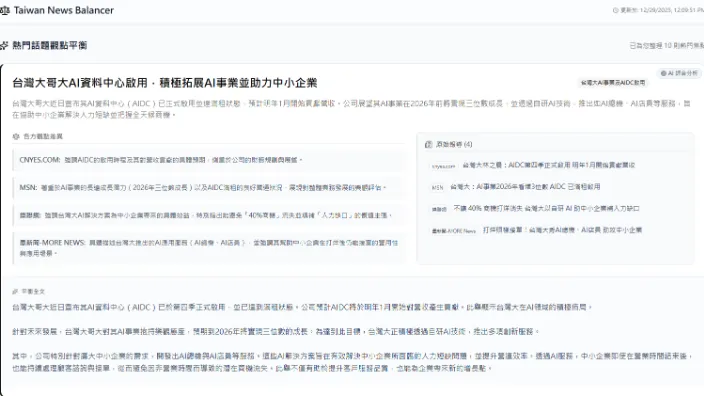

Full-stack Engineer · AI Applications
謝博旭 Bosh Shieh
全端工程師，在光電產業開發企業系統，做過採購、供應商系統與多項 AI 專案，目前負責物流平台。喜歡研究新技術，也喜歡把它們真的用到工作上。
關於我
畢業於彰化師範大學資訊管理學系（數位內容科技組），之後在中正大學資訊管理研究所取得碩士學位，研究主題是加密貨幣。研究所期間到澳洲參加國際學術會議並發表論文，也多次和海外學者交流研究成果。
目前在群創光電擔任 MIS 系統開發工程師，做過報表、請購與驗收流程、招標管理、供應商管理和電子發票等系統，現在調到物流領域，負責對外的 LSM 物流平台。主要使用 ASP.NET、jQuery、Python 和 Oracle，工作期間也自學了 Vue.js 和 LangChain 等 AI 框架，是公司採購系統 AI 功能的主要負責人之一，也當過內部講師，介紹提示詞工程和知識圖譜 AI 方案。
遇到不熟悉的領域，我會先研究再動手實作，一步步把它變成自己會的東西。
經歷
-
2023/8 – 現在
MIS 系統開發工程師
群創光電股份有限公司 · 台南
負責系統開發與維運。目前調到物流領域，負責給報關行、貨主、貨代與拖車業者使用的 LSM 物流平台。之前是供應商關係管理系統（SRM）、電子發票加值服務中心等核心系統的負責人，也負責過設備地圖管理系統、供應鏈可視化平台與採購作業平台，並主導比議價 AI 輔能、知識圖譜智能問答（Text to CQL）、採購戰情室 AI 助手等專案。
-
2021/6 – 2023/8
資訊管理學系 碩士
國立中正大學
研究領域為加密貨幣，在 ACIS 2022 與 SAIS 2023 發表論文。
-
2016/9 – 2021/6
資訊管理學系 數位內容科技組 學士
國立彰化師範大學
擔任過系學會幹部、助教與專案助理，用 Unity（C#）完成專題。
專案
LSM 物流平台創收專案
調到物流領域後接手的對外平台，正在規劃向使用者收費。平台分成兩個入口：給報關行使用的 LSM，以及給貨主、貨代、報關行和拖車業者使用的 B2B 平台。
供應商關係管理系統（SRM）創收專案
公司開始每年向供應商收取 SRM 系統使用費，我負責第一年的上線：強化現有功能、實作付費 AI 功能，並處理付款相關流程，包括未付款時的功能限制。
AI 智能 PO 分類
根據過去的採購單自動判斷 PO 分類，減少採購人員手動歸類的工作。用 Flowise 與 Langfuse 建置，可以記錄 log 和 token 用量；成功分類 13 萬筆過去沒有分類的舊 PO，讓歷史資料也能拿來分析。
比議價 AI 輔能
串接內部 ERP 與外部系統，輸入 PO/PR 單號就能取得單據和附件，自動解析報價單並產生議價建議。臨時接手時從零開始學 Vue.js 繼續開發。
採購戰情室 AI 助手
戰情室的條件和資料很多，操作繁瑣，也不容易跨表比對。這個 AI 助手讓主管用對話的方式快速查資料，節省時間。
DBLink 去化 ETL 方案
用 Spoon 在不同 Oracle 資料庫之間搬移資料，取代 DBLink，並協助開發 ETL 管理系統。
論文發表
- SAIS 2023 第一作者。將碩士論文精簡後投稿，線上報告並回答提問；除了英文校對，其餘都是我負責的。
- ACIS 2022（第 33 屆） 第三作者。負責問卷蒐集和理論建議，到澳洲出席會議，負責現場 Q&A。
技能
工作中常用
- ASP.NET MVC / .NET Core
- Python
- jQuery
- Vue.js
- Oracle SQL
- PostgreSQL
- LangChain / LangGraph
- Flowise
- Prompt Engineering
有接觸過
- Semantic Kernel
- Kubernetes / Ingress
- Unity (C#)
- C++
- Java
- Maya
- UML
語言與證照
- TOEIC 820
- Autodesk Maya 認證
- 中文、台語、英文
聯絡我
想聊聊工作機會、合作，或只是想交流技術，都歡迎透過 GitHub 找我。